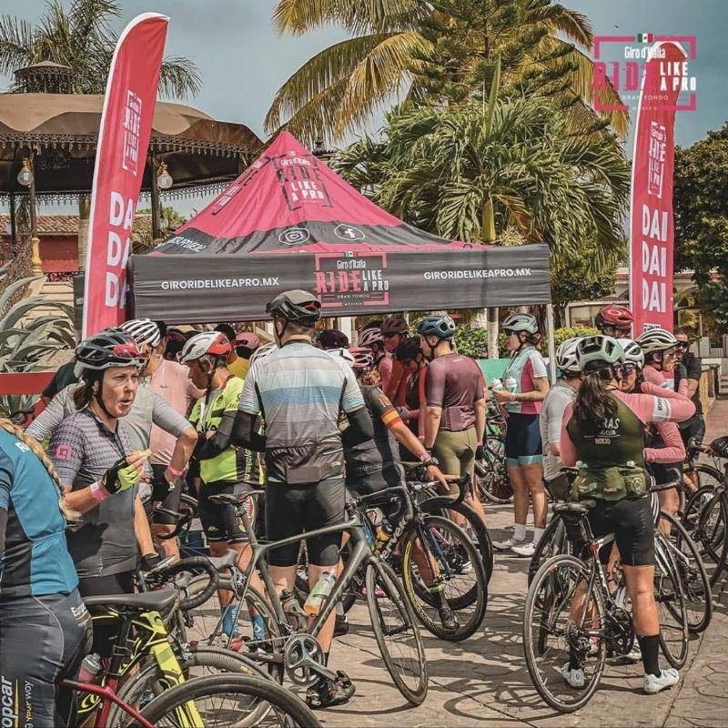
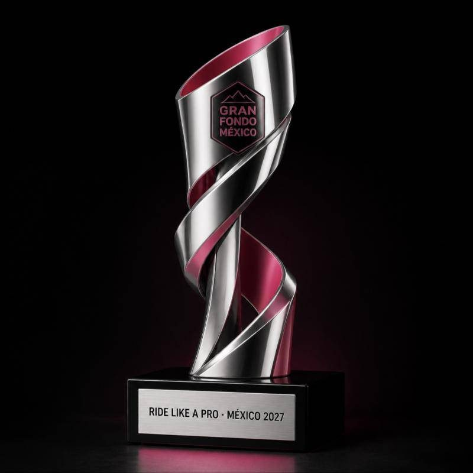
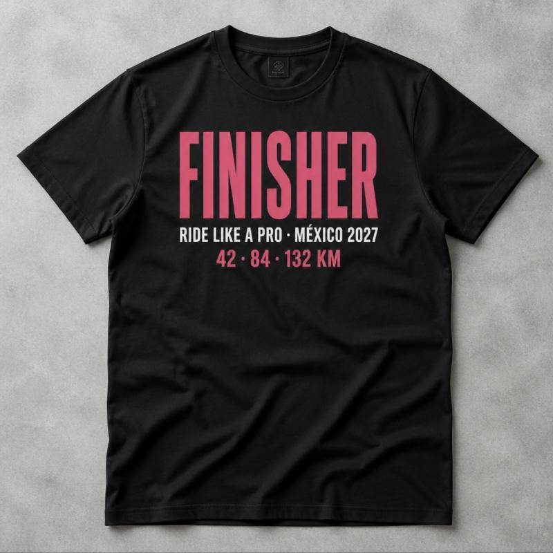
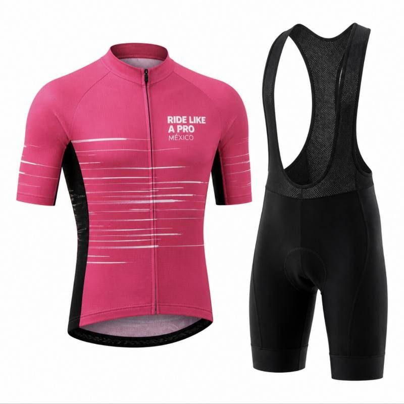

Con tus amigos
Armen su bloque, entrenen juntos y celebren cada kilómetro. Las mejores historias del día se cuentan en grupo.
Be the Maglia Rosa · Registro abierto
El gran fondo del Giro d'Italia sale del Zócalo de la Ciudad de México. Entrenas, llegas con tu bloque y terminas en Girolandia con medalla, jersey y toda tu gente esperándote.
Al dar clic eliges entre las dos boleteras oficiales del evento.

Cómo registrarte
El registro se hace en una de las dos boleteras oficiales. Elige la que prefieras: el lugar es el mismo.
Piccolo Fondo de 42 km, Medio Fondo de 84 km o Gran Fondo de 132 km.
Da clic en «Quiero registrarme» y escoge una de las dos plataformas oficiales para capturar tus datos y pagar.
Recibes tu confirmación y, conforme se acerque la fecha, la ruta, los horarios y la entrega de kit.
Por qué estar ahí
No es solo cruzar una meta. Es la salida en el corazón de la ciudad, la ruta, tu gente y una fiesta rosa al final.
01 · La meta
Cruzas el arco, escuchas tu nombre y alguien te cuelga la medalla. Ahí no termina la carrera: empieza Girolandia, el lugar donde el Giro se vive en grande. Tu gente te espera, hay comida para recuperar, música, marcas, fotos de podio y ese ambiente rosa que solo existe una vez al año.
Ven a la meta aunque no ruedes: Girolandia es para ciclistas, familias y aficionados.
Texto propuesto · por validar con la organización
02 · La ruta
La salida es en la esquina de 20 de Noviembre y el Zócalo. Aquí publicaremos el recorrido de cada distancia, la altimetría, los puntos de hidratación y el dispositivo de seguridad.
Datos de ruta en validación03 · La afición
El Giro se vive con tu gente. Ruedan juntos, se esperan en la meta o se ponen la camiseta para echar porras desde la banqueta.
Armen su bloque, entrenen juntos y celebren cada kilómetro. Las mejores historias del día se cuentan en grupo.

Que te vean salir del Zócalo y te reciban en Girolandia. Un domingo que se vuelve tradición.

La zona familiar y la meta están pensadas para que los más chicos vivan su primera fiesta rosa.

Entrenar juntos, rodar juntos y cruzar la meta juntos. Pocas citas se recuerdan tanto.
¿No vas a rodar? Ven a la salida en 20 de Noviembre y Zócalo, ponte algo rosa y acompaña a tu ciclista hasta Girolandia.
Fotos: Giro Ride Like a Pro México y Unsplash (Elena Makarevich, Brett Wharton). Uso de vista previa.
Distancias
Tres distancias, una misma salida y la misma fiesta en la meta.
Ideal para tu primera rodada larga o para vivir la experiencia a tu ritmo.
Registrarme al Piccolo FondoPara quien ya rueda constante y quiere ponerse a prueba.
Registrarme al Medio FondoPara ciclistas con fondo que quieren rodar como pro de principio a fin.
Registrarme al Gran FondoKit y recuerdos
El trofeo del podio, la playera finisher, el uniforme oficial y Lupo Wolfie, la mascota del Giro.
Imágenes ilustrativas · se reemplazan por las oficiales



Salida en el Zócalo, ruta con apoyo y una meta que se celebra como en Italia.
La salida se vive mejor en bloque. Capitanes y equipos: escríbannos y les ayudamos a registrar a su crew.
Resolvemos tus dudas
¿No encuentras tu respuesta? Escríbenos a participantes@giro-mexico.com.
El domingo 28 de febrero de 2027, en la esquina de la avenida 20 de Noviembre y el Zócalo, Centro Histórico de la Ciudad de México. La estación de Metro más cercana es Zócalo/Tenochtitlan (Línea 2). Los horarios de salida por distancia se publicarán con la ruta.
Hay una distancia para cada nivel: Piccolo Fondo de 42 km para disfrutar el reto, Medio Fondo de 84 km para ir por más y Gran Fondo de 132 km para la experiencia completa.
La ruta, la altimetría y los puntos de hidratación se publicarán en la sección La ruta y se compartirán directamente con las personas registradas.
Es la zona de meta del evento: más que una llegada, una experiencia con medalla, foto de podio, recuperación, música, marcas y zona familiar. Tus acompañantes también pueden disfrutarla.
Número de participante con chip de cronometraje, medalla finisher, hidratación y apoyo en ruta, y acceso a la Experiencia Girolandia. El contenido final del kit se confirmará con la organización.
Te enviaremos los detalles de entrega de kit cuando se acerque la fecha.
Sí. Escríbenos a clubes@giro-mexico.com con el nombre del club, el capitán y el número estimado de ciclistas, y te ayudamos a organizar a tu bloque.
El registro requiere confirmar mayoría de edad. Si necesitas información para un menor, escríbenos a participantes@giro-mexico.com.
Las opciones disponibles se indican en el reglamento y en la boletera donde compraste. Si tienes un caso particular, escríbenos y te orientamos.
Te esperamos en el Zócalo
La salida es en el corazón de la ciudad, donde 20 de Noviembre desemboca en el Zócalo. Trae tus piernas, tu bloque y tus ganas.
Foto: Zócalo, CDMX · Luis Andrés Villalón Vega / Unsplash · Portada: Giro d'Italia (RCS Sport), uso de vista previa